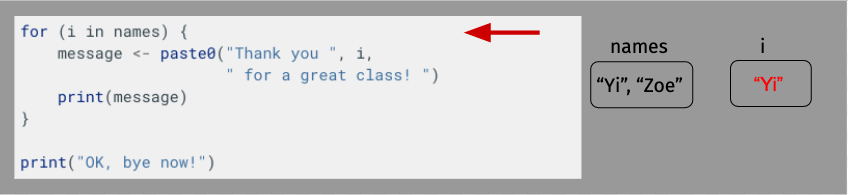
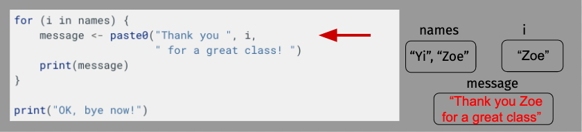
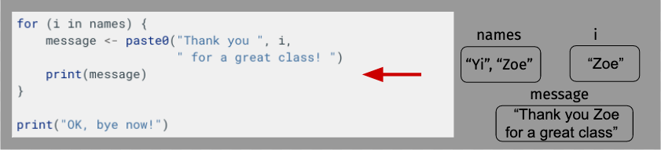
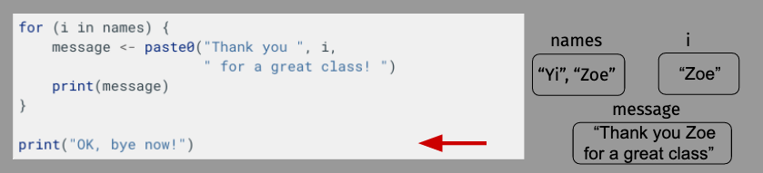

Loops
Contents
Loops¶
Until this point, the scripts we’ve been writing are quite straightforward: each line of code runs in sequence, one after another. Moreover, everything we want R to do, we have to write out by hand.
In this lesson, we’ll learn about loops – a programming structure ideal for getting R to do LOTS of work with very little code.
The basic idea of a loop is that in situations where you want R to do lots of very similar things, we can decompose our code into (a) generic code we want to run over and over, and (b) an input to that code that changes each time we repeat the generic code.
Let’s start with a simple example – suppose I wanted to thank my TAs and everyone in class for a great bootcamp.I could type it out with:
print("Happy Birthday Yi!")
print("Happy Birthday Zoe!")
print("Happy Birthday Ishani!")
print("Happy Birthday Kelly!")
...
etc. But that’d take FOREVER! Moreover, it’s easy to see that most of what I’m typing out is exactly the same on every line. If only there were some way to leverage that information…
Enter the loop!
The For-Loop¶
The most basic loop is called a for-loop, and it loops over a collection of items, doing the loop once per item in the collection.
In this case, our collection would be a vector with the names of all the students in the class. I won’t make you look at the full list, though, so here’s a little toy vector:
names <- c("Yi", "Zoe", "Ishani", "Kelly")
Then we need to write out a for-loop, which looks like this:
for(i in names) {
[code to repeat here]
}
The way this loop works is that it iterates over the names in names, and each time it reaches a new name, it sets i to equal that name, then runs the code in the middle. For example, I could print all the names like this:
for (i in names) {
print(i)
}
[1] "Yi"
[1] "Zoe"
[1] "Ishani"
[1] "Kelly"
But of course, we usually don’t just want to print i, we want to use it. So let’s try and thank everyone in the class with a loop.
Before we write code inside our loop, though, we’ll start by testing our code outside the loop to make it easier to troubleshoot, setting i <- names[1] by hand at the top to practice:
# Set `i` to first entry in `names`
# When we put this inside the loop,
# this will be done automatically by the loop
i <- names[1]
# Now write the code you want to put in your loop.
message <- paste0("Thank you ", i, " for a great class! ")
print(message)
[1] "Thank you Yi for a great class! "
If you haven’t seen paste0() before, it’s a function that takes characters and concatenates them (sticks them together). (There’s also a function called paste() that does the same thing but also adds a space between entries).
OK, so now that we’ve got working code to put in the middle, we can move it into our loop:
for (i in names) {
message <- paste0("Thank you ", i,
" for a great class! ")
print(message)
}
print("OK, bye now!")
[1] "Thank you Yi for a great class! "
[1] "Thank you Zoe for a great class! "
[1] "Thank you Ishani for a great class! "
[1] "Thank you Kelly for a great class! "
[1] "OK, bye now!"
A few things to note about this:
When developing the code to go into our loop, we started by assigning one of our names to
i. In the real loop, we don’t do that because it’s done automatically at the top of the loop.Remember how
print()always seemed pointless, since you could always just type the name of a variable to see its value? Well that trick doesn’t work in loops, which is why we need a tool likeprint().I also added a print statement at the end of my code – as you can see, when the loop has iterated over all the values in
names, R just moves on and runs the next command it sees.
OK, let’s take a moment to diagram what’s happening here just to make sure everything is clear. For length, though, we’ll shorten our name vector to just have Yi and Zoe.






Building a Loop¶
As noted above, the way to write a loop usually isn’t just to write a loop – troubleshooting code inside a loop is much harder than troubleshooting code that isn’t in the loop because you can’t run your code one line at a time if it is inside the loop. So when you’re writing a loop, I recommend following the following steps:
Write the first line of your loop. This will help you visualize what you’re looping over and what your looping variable (e.g.
iin the example above) will be.Write the code that you want to put inside your loop on its own. So that it runs the same way it will eventually run inside the loop, define your looping variable (
i) to be equal to the first entry in the vector you’re looping over (e.g.i <- names[1]). In that way the code you’re writing will have access to the same variable that it will have later.Move the code you have written separately into the loop (without that initial assignment
i <- names[1], obviously).If you have problems, put
print()statements inside your loop to give you information about what’s going on.
Other For-Loop Idioms¶
There are couple common patterns with for loops to be aware of. Above, we saw how we can loop over vector of predefined values, but another common idiom to be aware of is looping over a vector created with the 1:N operator (or the seq()) operator. For example, if I have a for loop that I want to run 5 times, I could write:
for (i in 1:5) {
print(i)
}
[1] 1
[1] 2
[1] 3
[1] 4
[1] 5
If / Else¶
Another useful tool for loops is if / else.
With if, you create a block of code that will only execute if a given condition is true. For example:
a <- 5
if (a < 10) {
print(a)
}
[1] 5
a <- 5
if (a > 10) {
print(a)
}
If you just use if, then the code between the squiggly brackets you write will run if the condition is true, and otherwise the code will move on. But sometimes you want different code to run if the test is false. For that we use an else block, written:
a <- 5
if (a > 10){
print("a is greater than 10!")
} else {
print("a is less than 10!")
}
[1] "a is less than 10!"
a <- 20
if (a > 10){
print("a is greater than 10!")
} else {
print("a is less than 10!")
}
[1] "a is greater than 10!"
How is this helpful in loops? Suppose you want to loop over a bunch of file names and do different things depending on whether the file name starts with data, or code:
files <- c("data12.txt", "code38978.R", "data_2021_08_01.dta",
"data_123.csv", "code13.R")
for (f in files){
# substr gets a portion of a character,
# starting at the second argument and
# ending at the third. So this will
# get either "code" or "data"
prefix <- substr(f, 1, 4)
if (prefix == "data"){
print(paste0(f, " is data. So I'd do a data thing here."))
} else {
print(paste0(f, " is code. So I'd do a code thinghere ."))
}
}
[1] "data12.txt is data. So I'd do a data thing here."
[1] "code38978.R is code. So I'd do a code thinghere ."
[1] "data_2021_08_01.dta is data. So I'd do a data thing here."
[1] "data_123.csv is data. So I'd do a data thing here."
[1] "code13.R is code. So I'd do a code thinghere ."
While Loops¶
There’s one other kind of loop used in advanced programming I’ll mention here, though you probably won’t use it for some time: a while loop. A while loop just keeps iterating until some condition is met. They’re useful for things like simulations or numerical optimizers where you want it to keep running till some condition (like convergence) is met. For example, if we wanted to know what $\(\Sigma_{n=1}^{\infty} \frac{1}{2^n}\)$ equaled, we could just keep guessing and checking, or we could ask R to keep adding on new terms until the total stopping moving much.
# Our sum:
sum <- 0
# Our index n
n <- 1
# How we measure change. Start with big number.
change <- 1
while (change > 0.00000001) {
old_sum <- sum
sum <- sum + 1 / (2^n)
change <- abs(sum - old_sum)
n <- n + 1
}
print(paste0("A sum of ", sum, " was reached after ", n, " iterations"))
[1] "A sum of 0.999999992549419 was reached after 28 iterations"
So we can clearly see we’re headed to 1.
WARNING: Be careful with while loops as they may never stop!
A problem with while loops is that if you write them wrong, the condition at the top may never be met, and so they’ll just keep running till you force-shutdown your R session.
Loops and the Tidyverse¶
As you may recall from our discussion of dplyr and the tidyverse, most functions in the tidyverse use a form of nonstandard evaluation within their functions – namely, text appearing within a function is interpreted as data (e.g. the name of a column), not as the name of a variable. As will discuss in the section, that becomes problematic when we start working with loops.
To illustrate, suppose we have a dataframe with the columns a and column_to_keep:
df <- data.frame(a = c(1, 2, 3), column_to_keep = c(4, 5, 6))
df
| a | column_to_keep |
|---|---|
| <dbl> | <dbl> |
| 1 | 4 |
| 2 | 5 |
| 3 | 6 |
Now, suppose we also created a variable called column_to_keep and assigned to it the character "a". So we now have a column named column_to_keep, and a variable named column_to_keep that has the value "a" assigned to it.
column_to_keep <- "a"
With normal array indexing, it’s not hard to make clear when we’re talking about the variable and when we’re talking about the column name: if you write column_to_keep without quotes, you mean the variable; if you write "column_to_keep" with quotes, you mean the literal set of characters “column_to_keep”, which correspond to the name of a column. So:
# No quotes -> read as a variable ->
# R substitutes the value assigned
# to the variable before evaluating,
# so this is the same as `df[, "a"]`:
df[, column_to_keep]
- 1
- 2
- 3
# With quotes -> read as a character ->
# get column "column_to_keep"
df[, "column_to_keep"]
- 4
- 5
- 6
But this is harder to deal with in tidyverse functions, because when they see text without quotes they assume you are not talking about a variable, you’re talking about the actual name of a column:
library(dplyr)
Attaching package: ‘dplyr’
The following objects are masked from ‘package:stats’:
filter, lag
The following objects are masked from ‘package:base’:
intersect, setdiff, setequal, union
# Get column "column_to_keep"
select(df, column_to_keep)
| column_to_keep |
|---|
| <dbl> |
| 4 |
| 5 |
| 6 |
For normal scripting, this can save you from having to type double quotes around column names all the time. But when we write loops, we need to get our tidyverse functions to interpret text as variables, because the whole point of a loop is that we have a variable that’s changing every time we go through the loop.
For example, if I wanted to loop over the columns of this dataset, with array indexing I could write:
for (column_to_keep in c("a", "column_to_keep")) {
print(df[, column_to_keep])
}
[1] 1 2 3
[1] 4 5 6
But… how do I do that if I’m using select? If I do what I did here, I’d just get column_to_keep twice:
for (column_to_keep in c("a", "column_to_keep")) {
print(select(df, column_to_keep))
}
column_to_keep
1 4
2 5
3 6
column_to_keep
1 4
2 5
3 6
To get around this, there are some hacks to make tidyverse work with loops. For example, we can wrap our text in .data[[]] if that text refers to a column name to ensure it’s interpreted as a variable and not a literal value. For example:
for (column_to_keep in c("a", "column_to_keep")) {
print(select(df, .data[[column_to_keep]]))
}
a
1 1
2 2
3 3
column_to_keep
1 4
2 5
3 6
Of course, that trick doesn’t solve all problems from looping over things in the tidyverse… For example, if wanted to do this with mutate I couldn’t use .data[[c]] for the name of the new column:
for (column_to_keep in c("a", "column_to_keep")) {
df <- mutate(df, .data[[column_to_keep]] = .data[[column_to_keep]]/ 1000
}
> ERROR: Error in parse(text = x, srcfile = src): <text>:2:46: unexpected '='
> 1: for (column_to_keep in c("a", "column_to_keep")) {
> 2: df <- mutate(df, .data[[column_to_keep]] =
> ^
> Error in parse(text = x, srcfile = src): <text>:2:46: unexpected '='
> 1: for (column_to_keep in c("a", "column_to_keep")) {
> 2: df <- mutate(df, .data[[column_to_keep]] =
> ^
> Traceback:
And this is one of the reasons that it’s good not to become over-reliant on tidyverse libraries – for basic scripting they can be very convenient, but it’s important to be comfortable with traditional tools like array indexing when things break down.
But we will do some less-contrived looping over tidyverse functions in our exercises, so I wanted a simple example here.
Don’t Loop Over Your Full Data¶
Finally, a super super important note about loops:
CAUTION Do not loop over your dataset rows
Loops are powerful, but one thing you almost never want to do is loop over the rows of your dataset. The reason is that looping is much slower than doing an operation using vector math (a practice called “vectorization”).
To illustrate, suppose I want to add up two vectors, each with 10,000,000 entries, and time the operation:
# Two random variables:
v1 <- rnorm(10000000)
v2 <- rnorm(10000000)
# add up with vector math:
# Record the current time
start <- proc.time()
# Multiply entries in two vectors
v1 <- v1 / v2 + 20
# Record current time
stop <- proc.time()
# Measure how much time elapsed
run_time_vector_addition <- stop - start
run_time_vector_addition
user system elapsed
0.072 0.020 0.092
Note I have to put them in a function to do it because of how
# Now add them up in a loop.
# Record the current time
start <- proc.time()
# Multiplying entries in a loop
for (i in 1:10000000) {
v1[i] <- v1[i] / v2[i] + 20
}
# Record current time
stop <- proc.time()
# Measure how much time elapsed
run_time_loop_addition <- stop - start
run_time_loop_addition
user system elapsed
0.65 0.01 0.66
# Looped took about this many time longer:
round(run_time_loop_addition[1] / run_time_vector_addition[1], 2)
So… yeah, >7x slower (the ratio varies over runs depending on things like how many other processes are running on your computer, so the code output may not quite match that text). Don’t do it.
Of course, in this example, the actual manipulations we’re doing are small enough that in absolute terms both operations are fast enough that it wouldn’t really matter which one you choose, but as you get into more complicated data manipulations, this kind of 10x speed difference (and often the differences are much much larger, on the order of 100x or more) can be the difference between your code running in a couple of seconds and versus a couple of hours (or the difference between running in a couple minutes and taking a couple days).
(If you want to know why, I have an explanation for the same phenomenon in Python here. The examples have Python code, but the principles are the same.)
So what should you do instead? You always want to write vectorized code, meaning code that operates on vectors as a whole rather than on the entries of a vector one at a time.
Exercises for Now¶
Use a for loop to take the square root of each value in the following vector:
vec1 <- c(4, 9, 81, 100, 1000, 10^6). Save the results to a new vector calledvec2.Monte Carlo Simulation (ambitious exercise): Imagine that the values in the vector
popbelow represent vote shares for a presidential candidate across the 3,144 counties in the United States. If we were to take a sample of 50 counties and estimate mean support for the presidential candidate, would we, on average, estimate the vote share across all counties accurately?
# Draw vector of length 3144 with random vectors
# containing values uniformally distributed between
# 0 and 1.
pop <- runif(n = 3144, min = 0, max = 1)
(Don’t worry about the fact that we really should be weighing counties by their population size to estimate overall support.)
Draw 10,000 samples of 50 counties from pop and estimate mean support for each sample, saving each mean estimate into a vector called smpl_means. How does the mean of the sample means compare to the population mean? Do we, on average, do a good job of estimating the population mean?
Exercises for Class¶
Here are some exercises we’ll be doing in our synchronous class. If you are enrolled in our synchronous sessions, please do not do these before class! If you’re reading these materials on your own or are enrolled in our asynchronous class, feel free to take a look now.